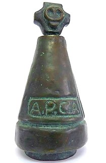
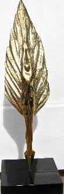
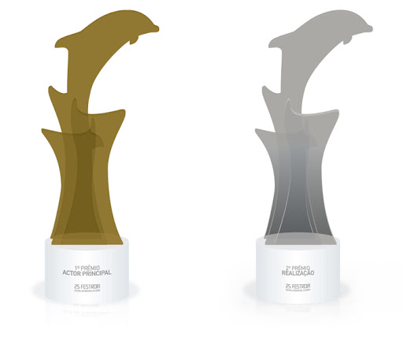
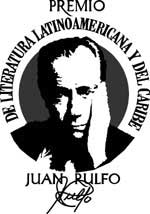
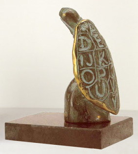
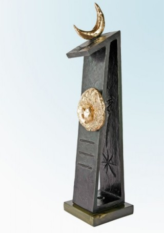

Escritora, jornalista, romancista, contista e professora
ALGUNS PRÊMIOS DE NÉLIDA PIÑON

Estatueta do Prêmio Associação Paulista dos Críticos de Arte - APCA, que Nélida Piñon recebeu pelo romance "A República dos Sonhos", no ano de 1985.

Prêmio Pen Clube Brasil, que Nélida Piñon recebeu pelo romance “A República dos Sonhos”, no ano de 1985.

Prêmio Golfinho de Ouro, que Nélida Piñon recebeu em 1990.

Prêmio de Literatura Latinoamericana y del Caribe Juan Rulfo, que Nélida Piñon recebeu no ano de 1995.

Prêmio Jabuti, que Nélida Piñon recebeu pela obra "Vozes do Deserto", no ano de 2005.

Prêmio Princípe de Astúrias, que Nélida Piñon recebeu pelo conjunto de obras, no ano de 2005.